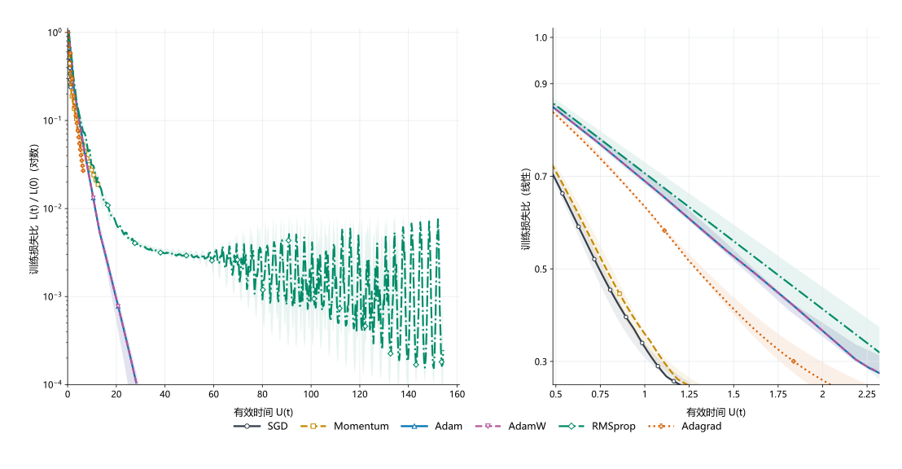
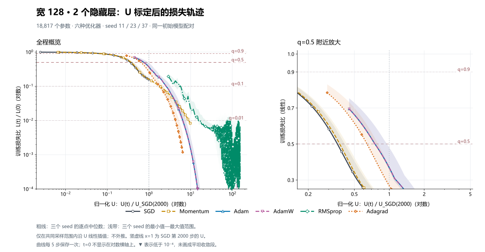
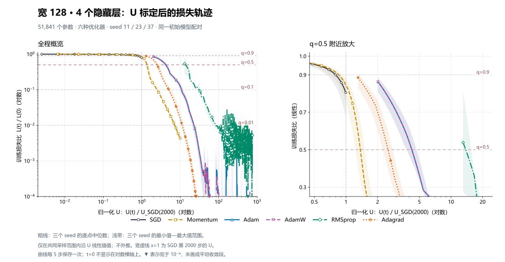

D1：等效训练时间的适用范围
比较优化器时常问：同一学习率下，动量 SGD 要多少步，才能把损失降到和无动量 SGD 一样的比例？工程上用“等效训练时间”做这个换算。
1. 公式与符号
下表是预测损失步数时用的等效训练时间。
| 优化器 | 等效训练时间 $U$：预测损失步数用 | 本程序实测范围与通过率 |
|---|---|---|
| SGD（普通梯度下降） | $U=\eta T$ | 固定特征、8 维、5 个单方向目标；$G$ 不进入时间换算。 |
| SGD+momentum（累积过去梯度） | $U=\eta\left[\frac{T}{1-\mu}-\frac{\mu(1-\mu^T)}{(1-\mu)^2}\right]$；累计完成后近似 $\eta T/(1-\mu)$ | 从零启动、$\mu=0.9$、早期弱曲率 4/4 配对为 0 步误差；晚期“启动修正不更差”在 6/10 配对失败。双方向目标还须附 $\alpha$ 与 $q$ 的范围。 |
| Adam（按梯度历史缩放步长） | $U_j=\frac{\eta T}{G_j+\epsilon}\approx\frac{\eta T}{G_j}$ | 学习特征 MLP 的迁移检验见第4节；逐坐标位移取欧氏范数后得到标量 U。 |
| AdamW（Adam 加独立参数衰减） | $U_j=\frac{\eta}{G_j+\epsilon}\sum_{k=0}^{T-1}(1-\eta\omega)^k$ | 学习特征 MLP 的迁移检验见第4节；逐坐标位移取欧氏范数后得到标量 U。 |
| RMSprop（按近期梯度平方缩放步长） | $U_j=\eta\sum_{t=1}^{T}\frac{1}{G_j\sqrt{1-\beta^t}+\epsilon}$ | 学习特征 MLP 的迁移检验见第4节；逐坐标位移取欧氏范数后得到标量 U。 |
| Adagrad（按累计梯度平方缩放步长） | $U_j=\eta\sum_{t=1}^{T}\frac{1}{\sqrt{a_{0j}+tG_j^2}+\epsilon}$ | 学习特征 MLP 的迁移检验见第4节；逐坐标位移取欧氏范数后得到标量 U。 |
符号：$U$ 是等效训练时间，$U_j$ 是第 $j$ 个参数方向的等效训练时间（自适应优化器须逐坐标记账）。$G=\lVert g\rVert_2$，$G_j=|g_j|$；$\eta$ 是学习率，$T$ 是步数，$\mu$ 是动量系数，$\epsilon$ 是防除零小正数，$\omega$ 是 AdamW 衰减系数，$\beta$ 是 RMSprop 平方平均系数，$a_{0j}$ 是 Adagrad 初始平方累积。
2. 用等效训练时间预测步数
我们是怎么用等效训练时间预测步数的呢？
首先，我们以 SGD 为例：取 SGD 训练到损失比 $q$ 时的步数为 $t_0$，再把它代入等效训练时间公式，令两边的 $U$ 相等，预测 SGD(mom=0.9) 训练到同一损失比的步数 $t$。
实验中我们对每个 $t_0$ 同时算两个预测：1. 稳态：$t_{\text{steady}}=\lceil t_0/10\rceil$，假设动量一开始就保持满速（这样就能直接套用上面的公式）；2. 启动：$t_{\text{startup}}=\min\{t\in\mathbb N:10t-90(1-.9^t)\ge t_0\}$，把前几步的加速期算进去。两个预测分别和 SGD(mom=0.9) 训练到相同损失比的实测步数 $t_{\text{obs}}$ 比，误差 $E=|t_{\text{pred}}-t_{\text{obs}}|/t_{\text{obs}}$。$E\le5\%$ 算成立，$E\ge50\%$ 算失效。
3. 实验
3.1 控制快慢方向占比 如果损失由快慢两个方向组成，慢方向一开始占总损失的比例记为 $\alpha$，损失降到初始的多少记为 $q$。$\alpha$ 越小，慢方向越不重要。下表是谱 $[0.001,0.5]$、$q=0.01$ 的全部配对：
误差按 \(|t_{\mathrm{pred}}-t_{\mathrm{obs}}|/t_{\mathrm{obs}}\) 计算。数据来自保存的 r017 双方向实验：\(\alpha\) 表示慢方向在初始总损失中的份额；每个条件的 3 个坐标 seed 结果相同。图显示在这组固定谱和 \(q\) 下，低 \(\alpha\) 区间两种预测误差较大，高 \(\alpha\) 区间进入 5% 线内；这描述的是该二次模型的条件性结果。
由实验可知：$\alpha=0.02/0.1/0.5$ 时，两种误差都 ≤5%（3/3），我们的预测（预测方式见第二节）是准的。然而$\alpha=0.001/0.005/0.009$ 时都 ≥50%（3/3），换算失效。
边界不是固定的。把快方向从 0.5 改到 0.05，低 $\alpha$ 的失效判据变成 0/3（稳态 23.6842%–47.6190%，启动 47.3684%–69.0476%），高 $\alpha$ 仍 ≤5%。把 $q$ 降到 0.001，$\alpha=0.005$–0.5 的 5/5 进入 5%（稳态 0.091075%–0.680272%，启动 0.867410%–0.971817%）；但 $\alpha=q=0.001$ 启动误差 8.988764%。
暗示的结论： 预测是否成立由谱、$\alpha$、$q$ 共同决定
3.2 动量启动修正预测到晚期会失效。 早期启动修正是非常准确的，但到 $q=0.01$、40000 步时，10 个配对里 6 个使用启动误差的组反而更差：$h=0.0001/0.001/0.005$ 实测 2290/217/37，稳态 2303/231/46，启动 2312/240/55；稳态误差 13/14/9 步，启动误差 22/23/18 步。
图中为 q=0.01、g₀=0.003、持续达到 T 的结果；纵轴误差按 |预测步数 - 实测步数| / 实测步数 计算，数值与保存的 summary.json 一致。每个 h 下 3 个坐标 seed 的结果相同；按 5% 准则，h=0.0001 时两种预测都达标，h≥0.001 时均未达标。原研究 10 个配对条件中，6 个启动修正误差大于稳态预测误差。
暗示的结论： 我们提取的启动项是启发式的，只在早期有用，并不通用。
4. U 能否迁移到学习特征的神经网络？
前面的固定特征实验提供受控参照。这里直接检验：在训练过程中会改变特征的 ReLU 网络里，用初始梯度推得的标量 U，能否把不同优化器达到同一训练损失比例的步数换算到一起？这项实验不要求固定特征二次损失分解成立；它检验的是一条明确的经验预测规则，不是对任意网络的定理。
每张图左侧展示完整 U 尺度轨迹，右侧放大 q=0.5 附近；不同颜色、线型和符号区分优化器。粗线为三个配对 seed 的逐点中位数，浅带为三个 seed 的最小—最大范围。每图下方可展开逐 seed 原始采样图和完整 setting。横轴按同一结构、同一 seed 的 SGD 第 2000 步 U 归一化；图用于观察对齐程度，数值判定仍来自逐步端点记录。

窄屏可左右滑动图像，或点击“打开大图”缩放查看。
浅带是三个 seed 的观测范围，不是置信区间。Adam 与 AdamW 高度接近时，以蓝色实线/上三角和紫色虚线/下三角辨认。曲线每 5 步保存一次；RMSprop 可能在首个正 U 采样点之前达到阈值，放大图不能恢复缺失的逐步轨迹。精确首次与持续端点见下方 setting。
完整 setting · 宽 64 · 2 个隐藏层 · 数据、优化器、U 与逐 seed 端点
| student 网络 | 16 → 64 → 64 → 1；共 5,313 个可训练参数。深度指隐藏层数；每个隐藏层为 Linear + ReLU，最后线性输出标量；各 Linear 含 bias。所有层同时训练，无 dropout、归一化层、残差或参数冻结。 |
|---|---|
| 输入与目标 | 训练/验证输入各 256×16，独立标准正态采样。teacher 实际为 16 → 32 → 1：ReLU(XW₁)W₂，bias 为零；W₁ 元素按 N(0,2/16)、W₂ 按 N(0,1/32) 采样，无额外标签噪声。 |
| 标准化与损失 | 用训练目标均值和总体标准差（unbiased=False）做中心化和缩放，验证目标用同一变换。L(t)=mean[(fθ(x)−y)²]；图中为 L(t)/L(0)，不减最优损失。验证集未用于调参、选点或作本图纵轴。 |
| seed 与初始化 | seed 为 11、23、37。数据生成器 seed=100000+s；初始化 seed=200000+1000a+s，a=0/1/2 对应三种结构的顺序。student 使用 PyTorch nn.Linear 默认初始化。同一结构、同一 seed 的六种优化器共享数据、初始权重和初始损失。 |
| 训练协议 | CPU、float64、单线程、PyTorch deterministic algorithms；全批量 256 个样本，不洗牌，无随机层。所有优化器学习率恒为 0.001，无学习率调度，统一训练 2000 次更新。未搜索各优化器学习率。 |
| SGD 参考结果 | seed 11：首次达到 q=0.5 为 1128 步，末端损失比 0.239；seed 23：首次达到 q=0.5 为 1086 步，末端损失比 0.183；seed 37：首次达到 q=0.5 为 1011 步，末端损失比 0.217 |
| 曲线保存与汇总 | 每 5 步保存一次，包含 t=0 和 t=2000，共 401 个点。t=0 因 U=0 不显示在对数横轴；主图仅在三个 seed 共同的正 U 范围内按 U 线性插值后取逐点中位数与最小—最大范围，不平滑、不外推；右图仅放大坐标。逐 seed 图直接连接保存的点。 |
| 显示与分辨率 | x=U_method,s(t)/U_SGD,s(2000)，按同一结构和 seed 归一化，x=1 是 SGD 预算末端。主图左侧双对数、右侧纵轴线性；低于 10⁻⁴ 的部分留空并以向下三角标记。若前 5 步已穿过阈值，采样曲线不能恢复这一段；精确端点取自逐步计算后保存的 summary。 |
六种优化器的完整参数：各状态从零开始。除 AdamW 外均不衰减参数。
| 优化器 | 设置（所有学习率均为 0.001） |
|---|---|
| SGD | momentum=0，weight_decay=0 |
| Momentum SGD | momentum=0.9，dampening=0，Nesterov=false，weight_decay=0 |
| Adam | β₁=0.9，β₂=0.999，ε=10⁻⁸，偏差修正，weight_decay=0 |
| AdamW | 同 Adam 的 β 和 ε；解耦 weight_decay=0.01，作用于全部参数（含 bias） |
| RMSprop | α=0.99，ε=10⁻⁸，momentum=0，centered=false，不作偏差修正，weight_decay=0 |
| Adagrad | 初始累积量=0，ε=10⁻⁸，lr_decay=0，weight_decay=0 |
U 的计算：对初始参数 θ₀ 计算完整训练集梯度 g₀；固定 g=g₀，用相应优化器的同一更新规则和零初始状态模拟参数 θᶜ(t)，定义 U(t)=‖θᶜ(t)−θ₀‖₂。SGD 为 ηt‖g₀‖₂；Momentum 包含零启动累积项；Adam 包含偏差修正；AdamW 的总位移包含独立衰减；RMSprop 不做偏差修正；Adagrad 从零平方累积量开始。本节的 U 是参数位移的范数；前文的累计步长系数须先作用于 g₀，再聚合成位移，AdamW 还要计入对 θ₀ 的衰减项。这个标量丢弃方向信息，不等于真实轨迹的累计路程。
预测与判据：q∈{0.9,0.5,0.1,0.01}。同一 seed 的 SGD 首次达到 L(t)/L(0)≤q 时取得目标 U；其他优化器首次达到该 U 的整数步为 t_pred，其真实损失首次达到 q 的步数为 t_obs。误差 E=|t_pred−t_obs|/t_obs，E≤5% 通过；主检验 q=0.5。真实端点、预测端点或参考端点在 2000 步内未达到时保留为空；不补成 2000 步。持续端点是此后直到第 2000 步均满足阈值的首步，仅作辅助记录。
q=0.5 的逐 seed 精确端点：下表来自逐步阈值记录，不从五步采样曲线反推；“持续”与主指标“首次”分别列出。
| seed | 优化器 | SGD 首次 | 预测步数 | 实测首次 | 实测持续 | 首次步数误差 |
|---|---|---|---|---|---|---|
| 11 | Momentum | 1128 | 122 | 128 | 128 | 4.69% |
| 11 | Adam | 1128 | 10 | 22 | 22 | 54.55% |
| 11 | AdamW | 1128 | 10 | 22 | 22 | 54.55% |
| 11 | RMSprop | 1128 | 1 | 3 | 3 | 66.67% |
| 11 | Adagrad | 1128 | 31 | 97 | 97 | 68.04% |
| 23 | Momentum | 1086 | 118 | 125 | 125 | 5.60% |
| 23 | Adam | 1086 | 11 | 23 | 23 | 52.17% |
| 23 | AdamW | 1086 | 11 | 23 | 23 | 52.17% |
| 23 | RMSprop | 1086 | 2 | 3 | 3 | 33.33% |
| 23 | Adagrad | 1086 | 36 | 91 | 91 | 60.44% |
| 37 | Momentum | 1011 | 111 | 116 | 116 | 4.31% |
| 37 | Adam | 1011 | 11 | 22 | 22 | 50.00% |
| 37 | AdamW | 1011 | 11 | 22 | 22 | 50.00% |
| 37 | RMSprop | 1011 | 2 | 3 | 3 | 33.33% |
| 37 | Adagrad | 1011 | 34 | 92 | 92 | 63.04% |
记录差异：预注册文字把 teacher 写成“两隐藏层”，冻结源码实际为一个宽 32 的隐藏层；本页按执行实现描述，并保留这项协议文字与实现的差异。预注册端点主指标为“首次达到”；持续端点是另存的辅助指标。图中用 SGD 第 2000 步 U 归一化属于展示后处理；预注册提到的 q=0.5 端点匹配仍用于原误差指标，深层结构在该阈值缺少参考端点。
证据与范围：预注册 commit 7b4921a，结果 commit 1fdabc0；PyTorch 2.10.0+cpu、NumPy 2.3.2。产物目录 AIQ_KB_DATA/runs/d1_nn_u_transfer_r1/directions/D1_u_effective_time/studies/r001_nn_u_transfer/；preregistration.json 为协议，run.py 为执行实现，summary.json 为逐步端点摘要，results/width64_depth2/seed_*/ 为五步采样轨迹。本图使用 18 个训练单元；本轮合计 54 个单元、216 个优化器×阈值记录。结论只覆盖该合成回归、这些结构和固定参数，不构成真实任务结果或优化器排名。

窄屏可左右滑动图像，或点击“打开大图”缩放查看。
浅带是三个 seed 的观测范围，不是置信区间。Adam 与 AdamW 高度接近时，以蓝色实线/上三角和紫色虚线/下三角辨认。曲线每 5 步保存一次；RMSprop 可能在首个正 U 采样点之前达到阈值，放大图不能恢复缺失的逐步轨迹。精确首次与持续端点见下方 setting。
完整 setting · 宽 128 · 2 个隐藏层 · 数据、优化器、U 与逐 seed 端点
| student 网络 | 16 → 128 → 128 → 1；共 18,817 个可训练参数。深度指隐藏层数；每个隐藏层为 Linear + ReLU，最后线性输出标量；各 Linear 含 bias。所有层同时训练，无 dropout、归一化层、残差或参数冻结。 |
|---|---|
| 输入与目标 | 训练/验证输入各 256×16，独立标准正态采样。teacher 实际为 16 → 32 → 1：ReLU(XW₁)W₂，bias 为零；W₁ 元素按 N(0,2/16)、W₂ 按 N(0,1/32) 采样，无额外标签噪声。 |
| 标准化与损失 | 用训练目标均值和总体标准差（unbiased=False）做中心化和缩放，验证目标用同一变换。L(t)=mean[(fθ(x)−y)²]；图中为 L(t)/L(0)，不减最优损失。验证集未用于调参、选点或作本图纵轴。 |
| seed 与初始化 | seed 为 11、23、37。数据生成器 seed=100000+s；初始化 seed=200000+1000a+s，a=0/1/2 对应三种结构的顺序。student 使用 PyTorch nn.Linear 默认初始化。同一结构、同一 seed 的六种优化器共享数据、初始权重和初始损失。 |
| 训练协议 | CPU、float64、单线程、PyTorch deterministic algorithms；全批量 256 个样本，不洗牌，无随机层。所有优化器学习率恒为 0.001，无学习率调度，统一训练 2000 次更新。未搜索各优化器学习率。 |
| SGD 参考结果 | seed 11：首次达到 q=0.5 为 826 步，末端损失比 0.175；seed 23：首次达到 q=0.5 为 714 步，末端损失比 0.157；seed 37：首次达到 q=0.5 为 707 步，末端损失比 0.147 |
| 曲线保存与汇总 | 每 5 步保存一次，包含 t=0 和 t=2000，共 401 个点。t=0 因 U=0 不显示在对数横轴；主图仅在三个 seed 共同的正 U 范围内按 U 线性插值后取逐点中位数与最小—最大范围，不平滑、不外推；右图仅放大坐标。逐 seed 图直接连接保存的点。 |
| 显示与分辨率 | x=U_method,s(t)/U_SGD,s(2000)，按同一结构和 seed 归一化，x=1 是 SGD 预算末端。主图左侧双对数、右侧纵轴线性；低于 10⁻⁴ 的部分留空并以向下三角标记。若前 5 步已穿过阈值，采样曲线不能恢复这一段；精确端点取自逐步计算后保存的 summary。 |
六种优化器的完整参数：各状态从零开始。除 AdamW 外均不衰减参数。
| 优化器 | 设置（所有学习率均为 0.001） |
|---|---|
| SGD | momentum=0，weight_decay=0 |
| Momentum SGD | momentum=0.9，dampening=0，Nesterov=false，weight_decay=0 |
| Adam | β₁=0.9，β₂=0.999，ε=10⁻⁸，偏差修正，weight_decay=0 |
| AdamW | 同 Adam 的 β 和 ε；解耦 weight_decay=0.01，作用于全部参数（含 bias） |
| RMSprop | α=0.99，ε=10⁻⁸，momentum=0，centered=false，不作偏差修正，weight_decay=0 |
| Adagrad | 初始累积量=0，ε=10⁻⁸，lr_decay=0，weight_decay=0 |
U 的计算：对初始参数 θ₀ 计算完整训练集梯度 g₀；固定 g=g₀，用相应优化器的同一更新规则和零初始状态模拟参数 θᶜ(t)，定义 U(t)=‖θᶜ(t)−θ₀‖₂。SGD 为 ηt‖g₀‖₂；Momentum 包含零启动累积项；Adam 包含偏差修正；AdamW 的总位移包含独立衰减；RMSprop 不做偏差修正；Adagrad 从零平方累积量开始。本节的 U 是参数位移的范数；前文的累计步长系数须先作用于 g₀，再聚合成位移，AdamW 还要计入对 θ₀ 的衰减项。这个标量丢弃方向信息，不等于真实轨迹的累计路程。
预测与判据：q∈{0.9,0.5,0.1,0.01}。同一 seed 的 SGD 首次达到 L(t)/L(0)≤q 时取得目标 U；其他优化器首次达到该 U 的整数步为 t_pred，其真实损失首次达到 q 的步数为 t_obs。误差 E=|t_pred−t_obs|/t_obs，E≤5% 通过；主检验 q=0.5。真实端点、预测端点或参考端点在 2000 步内未达到时保留为空；不补成 2000 步。持续端点是此后直到第 2000 步均满足阈值的首步，仅作辅助记录。
q=0.5 的逐 seed 精确端点：下表来自逐步阈值记录，不从五步采样曲线反推；“持续”与主指标“首次”分别列出。
| seed | 优化器 | SGD 首次 | 预测步数 | 实测首次 | 实测持续 | 首次步数误差 |
|---|---|---|---|---|---|---|
| 11 | Momentum | 826 | 92 | 96 | 96 | 4.17% |
| 11 | Adam | 826 | 5 | 11 | 11 | 54.55% |
| 11 | AdamW | 826 | 5 | 11 | 11 | 54.55% |
| 11 | RMSprop | 826 | 1 | 2 | 4 | 50.00% |
| 11 | Adagrad | 826 | 9 | 27 | 27 | 66.67% |
| 23 | Momentum | 714 | 81 | 84 | 84 | 3.57% |
| 23 | Adam | 714 | 5 | 11 | 11 | 54.55% |
| 23 | AdamW | 714 | 5 | 11 | 11 | 54.55% |
| 23 | RMSprop | 714 | 1 | 4 | 4 | 75.00% |
| 23 | Adagrad | 714 | 10 | 25 | 25 | 60.00% |
| 37 | Momentum | 707 | 80 | 83 | 83 | 3.61% |
| 37 | Adam | 707 | 5 | 11 | 11 | 54.55% |
| 37 | AdamW | 707 | 5 | 11 | 11 | 54.55% |
| 37 | RMSprop | 707 | 1 | 4 | 4 | 75.00% |
| 37 | Adagrad | 707 | 10 | 26 | 26 | 61.54% |
记录差异：预注册文字把 teacher 写成“两隐藏层”，冻结源码实际为一个宽 32 的隐藏层；本页按执行实现描述，并保留这项协议文字与实现的差异。预注册端点主指标为“首次达到”；持续端点是另存的辅助指标。图中用 SGD 第 2000 步 U 归一化属于展示后处理；预注册提到的 q=0.5 端点匹配仍用于原误差指标，深层结构在该阈值缺少参考端点。
证据与范围：预注册 commit 7b4921a，结果 commit 1fdabc0；PyTorch 2.10.0+cpu、NumPy 2.3.2。产物目录 AIQ_KB_DATA/runs/d1_nn_u_transfer_r1/directions/D1_u_effective_time/studies/r001_nn_u_transfer/；preregistration.json 为协议，run.py 为执行实现，summary.json 为逐步端点摘要，results/width128_depth2/seed_*/ 为五步采样轨迹。本图使用 18 个训练单元；本轮合计 54 个单元、216 个优化器×阈值记录。结论只覆盖该合成回归、这些结构和固定参数，不构成真实任务结果或优化器排名。

窄屏可左右滑动图像，或点击“打开大图”缩放查看。
浅带是三个 seed 的观测范围，不是置信区间。Adam 与 AdamW 高度接近时，以蓝色实线/上三角和紫色虚线/下三角辨认。曲线每 5 步保存一次；RMSprop 可能在首个正 U 采样点之前达到阈值，放大图不能恢复缺失的逐步轨迹。精确首次与持续端点见下方 setting。
完整 setting · 宽 128 · 4 个隐藏层 · 数据、优化器、U 与逐 seed 端点
| student 网络 | 16 → 128 → 128 → 128 → 128 → 1；共 51,841 个可训练参数。深度指隐藏层数；每个隐藏层为 Linear + ReLU，最后线性输出标量；各 Linear 含 bias。所有层同时训练，无 dropout、归一化层、残差或参数冻结。 |
|---|---|
| 输入与目标 | 训练/验证输入各 256×16，独立标准正态采样。teacher 实际为 16 → 32 → 1：ReLU(XW₁)W₂，bias 为零；W₁ 元素按 N(0,2/16)、W₂ 按 N(0,1/32) 采样，无额外标签噪声。 |
| 标准化与损失 | 用训练目标均值和总体标准差（unbiased=False）做中心化和缩放，验证目标用同一变换。L(t)=mean[(fθ(x)−y)²]；图中为 L(t)/L(0)，不减最优损失。验证集未用于调参、选点或作本图纵轴。 |
| seed 与初始化 | seed 为 11、23、37。数据生成器 seed=100000+s；初始化 seed=200000+1000a+s，a=0/1/2 对应三种结构的顺序。student 使用 PyTorch nn.Linear 默认初始化。同一结构、同一 seed 的六种优化器共享数据、初始权重和初始损失。 |
| 训练协议 | CPU、float64、单线程、PyTorch deterministic algorithms；全批量 256 个样本，不洗牌，无随机层。所有优化器学习率恒为 0.001，无学习率调度，统一训练 2000 次更新。未搜索各优化器学习率。 |
| SGD 参考结果 | seed 11：首次达到 q=0.5 为 未达到（2000 步截尾），末端损失比 0.852；seed 23：首次达到 q=0.5 为 未达到（2000 步截尾），末端损失比 0.670；seed 37：首次达到 q=0.5 为 未达到（2000 步截尾），末端损失比 0.802 |
| 曲线保存与汇总 | 每 5 步保存一次，包含 t=0 和 t=2000，共 401 个点。t=0 因 U=0 不显示在对数横轴；主图仅在三个 seed 共同的正 U 范围内按 U 线性插值后取逐点中位数与最小—最大范围，不平滑、不外推；右图仅放大坐标。逐 seed 图直接连接保存的点。 |
| 显示与分辨率 | x=U_method,s(t)/U_SGD,s(2000)，按同一结构和 seed 归一化，x=1 是 SGD 预算末端。主图左侧双对数、右侧纵轴线性；低于 10⁻⁴ 的部分留空并以向下三角标记。若前 5 步已穿过阈值，采样曲线不能恢复这一段；精确端点取自逐步计算后保存的 summary。 |
六种优化器的完整参数：各状态从零开始。除 AdamW 外均不衰减参数。
| 优化器 | 设置（所有学习率均为 0.001） |
|---|---|
| SGD | momentum=0，weight_decay=0 |
| Momentum SGD | momentum=0.9，dampening=0，Nesterov=false，weight_decay=0 |
| Adam | β₁=0.9，β₂=0.999，ε=10⁻⁸，偏差修正，weight_decay=0 |
| AdamW | 同 Adam 的 β 和 ε；解耦 weight_decay=0.01，作用于全部参数（含 bias） |
| RMSprop | α=0.99，ε=10⁻⁸，momentum=0，centered=false，不作偏差修正，weight_decay=0 |
| Adagrad | 初始累积量=0，ε=10⁻⁸，lr_decay=0，weight_decay=0 |
U 的计算：对初始参数 θ₀ 计算完整训练集梯度 g₀；固定 g=g₀，用相应优化器的同一更新规则和零初始状态模拟参数 θᶜ(t)，定义 U(t)=‖θᶜ(t)−θ₀‖₂。SGD 为 ηt‖g₀‖₂；Momentum 包含零启动累积项；Adam 包含偏差修正；AdamW 的总位移包含独立衰减；RMSprop 不做偏差修正；Adagrad 从零平方累积量开始。本节的 U 是参数位移的范数；前文的累计步长系数须先作用于 g₀，再聚合成位移，AdamW 还要计入对 θ₀ 的衰减项。这个标量丢弃方向信息，不等于真实轨迹的累计路程。
预测与判据：q∈{0.9,0.5,0.1,0.01}。同一 seed 的 SGD 首次达到 L(t)/L(0)≤q 时取得目标 U；其他优化器首次达到该 U 的整数步为 t_pred，其真实损失首次达到 q 的步数为 t_obs。误差 E=|t_pred−t_obs|/t_obs，E≤5% 通过；主检验 q=0.5。真实端点、预测端点或参考端点在 2000 步内未达到时保留为空；不补成 2000 步。持续端点是此后直到第 2000 步均满足阈值的首步，仅作辅助记录。
q=0.5 的逐 seed 精确端点：下表来自逐步阈值记录，不从五步采样曲线反推；“持续”与主指标“首次”分别列出。
| seed | 优化器 | SGD 首次 | 预测步数 | 实测首次 | 实测持续 | 首次步数误差 |
|---|---|---|---|---|---|---|
| 11 | Momentum | — | — | 312 | 312 | 不可比较 |
| 11 | Adam | — | — | 12 | 12 | 不可比较 |
| 11 | AdamW | — | — | 12 | 12 | 不可比较 |
| 11 | RMSprop | — | — | 4 | 8 | 不可比较 |
| 11 | Adagrad | — | — | 17 | 17 | 不可比较 |
| 23 | Momentum | — | — | 256 | 256 | 不可比较 |
| 23 | Adam | — | — | 11 | 11 | 不可比较 |
| 23 | AdamW | — | — | 11 | 11 | 不可比较 |
| 23 | RMSprop | — | — | 4 | 6 | 不可比较 |
| 23 | Adagrad | — | — | 15 | 15 | 不可比较 |
| 37 | Momentum | — | — | 284 | 284 | 不可比较 |
| 37 | Adam | — | — | 11 | 11 | 不可比较 |
| 37 | AdamW | — | — | 11 | 11 | 不可比较 |
| 37 | RMSprop | — | — | 2 | 4 | 不可比较 |
| 37 | Adagrad | — | — | 16 | 16 | 不可比较 |
记录差异：预注册文字把 teacher 写成“两隐藏层”，冻结源码实际为一个宽 32 的隐藏层；本页按执行实现描述，并保留这项协议文字与实现的差异。预注册端点主指标为“首次达到”；持续端点是另存的辅助指标。图中用 SGD 第 2000 步 U 归一化属于展示后处理；预注册提到的 q=0.5 端点匹配仍用于原误差指标，深层结构在该阈值缺少参考端点。
证据与范围：预注册 commit 7b4921a，结果 commit 1fdabc0；PyTorch 2.10.0+cpu、NumPy 2.3.2。产物目录 AIQ_KB_DATA/runs/d1_nn_u_transfer_r1/directions/D1_u_effective_time/studies/r001_nn_u_transfer/；preregistration.json 为协议，run.py 为执行实现，summary.json 为逐步端点摘要，results/width128_depth4/seed_*/ 为五步采样轨迹。本图使用 18 个训练单元；本轮合计 54 个单元、216 个优化器×阈值记录。结论只覆盖该合成回归、这些结构和固定参数，不构成真实任务结果或优化器排名。
结论：在本次合成回归设定中，初始梯度标定的 U 没有跨优化器普遍迁移。以 q=0.5、5% 相对步数误差为标准，15 个“非参考优化器×网络结构”汇总格中，8 个未通过、2 个通过、5 个不可比较；两个通过格都来自 Momentum。Adam、AdamW、RMSprop 和 Adagrad 在两个可比较的浅层结构上，中位误差为 33%–75%。
证据边界也很明确：可比较的两种结构分别是宽度 64/深度 2 和宽度 128/深度 2。宽度 128/深度 4 的 SGD 参考轨迹在预算内没有达到 q=0.5，因此该结构的五个优化器配对都无法检验。q=0.1 与 q=0.01 的 45 个配对各自全部因 SGD 参考未达到阈值而不可比较；q=0.01 时另有 6 个非参考优化器轨迹也未达到阈值。截尾不算预测通过，也不能据此断言网络深度导致 U 失效。
| 网络结构 | Momentum | Adam | AdamW | RMSprop | Adagrad |
|---|---|---|---|---|---|
| 宽 64，深 2 | 4.69%（2/3 ≤5%） | 52.17%（0/3） | 52.17%（0/3） | 33.33%（0/3） | 63.04%（0/3） |
| 宽 128，深 2 | 3.61%（3/3 ≤5%） | 54.55%（0/3） | 54.55%（0/3） | 75.00%（0/3） | 61.54%（0/3） |
| 宽 128，深 4 | 不可比较：SGD 参考的 3/3 个 seed 均未在 2000 步预算内达到 q=0.5 | ||||
表中数值为三个 seed 的首次阈值步数相对误差中位数，括号为逐 seed 通过数。E=|t_pred−t_obs|/t_obs，E≤5% 通过；t_obs 按首次达到阈值计算。持续达到阈值是独立辅助指标，逐 seed 值列于每图下的完整 setting。